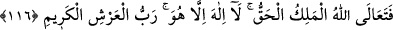
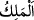
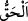
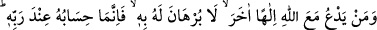
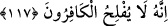

116. Mutlak hâkim ve hak olan Allah, çok yücedir. O’ndan başka ilah yoktur, O,
kerîm Arş’ın sahibidir.
“Mutlak hâkim ve hak olan” var etme, yok etme, ilk olarak ve tekrar yaratma, hayat
verme ve öldürme, cezalandırma ve sevab verme bakımından mutlak olarak
mülke/hâkimiyete müstehak olan, kendisi dışındaki her şey O’nun mülk ve tasarrufunda,
yüce mülk ve hâkimiyetine boyun eğmiş bulunan “Allah, çok yücedir.” Allah zâtında
yücedir. Zâtında, sıfat ve fiillerinde yaratılmışlara benzemekten; fiilleri hikmetlerden,
maslahatlardan ve yüce gayelerden hâlî olmaktan münezzehtir.
İmam Gazzâlî der ki: “
” zâtında, sıfatlarında ve fiillerinde bütün varlıklardan
müstağnî olan ve var olan her şeyin kendisine muhtaç olduğu zâttır.”
el-Müfredât’ta şöyle der: “
” hikmetin gerektirdiği bir sebeple bir şeyi var edip
yaratandır.”
et-Te’vîlâtü’n-Necmiyye’de ise şöyle der: “O’nun zâtı hak, sıfatları hak ve sözü
dosdoğrudur. Hiç bir yaratılmışın O’nun üzerinde hakkı yoktur. Kullarına ettiği ihsandan
hiçbiri müstahak olduklarından dolayı değildir.”
“O’ndan başka ilah yoktur.” Çünkü O’ndan başka her şey O’nun kullarıdır.
“O, kerîm Arş’ın sâhibidir.” Arş’ın altında ve onun tarafından kuşatılmış olan ne
olursa olsun bütün mevcûdâtın nasıl Rabbi ve sâhibi olmasın!
Arş ‘kerîm’ olarak vasfedilmiştir. Çünkü Hakk’ın kereminin feyzinin ve rahmetinin
taksim yeridir. Rahmetinin ve kereminin eserleri mahlûkâtın zerrelerine ondan taksim
olunur.
117. Her kim Allah ile birlikte diğer bir ilaha taparsa, -ki bu hususla ilgili hiçbir
delili yoktur- o kimsenin hesabı ancak Rabbinin nezdindedir. Şurası muhakkak ki
kâfirler iflah olmaz.
“Her kim Allah ile birlikte” tek başına veya ortak olarak “diğer bir ilâha taparsa -ki
bu hususla” yâni Allah’la birlikte ona tapmasıyla “ilgili hiçbir delili yoktur-” Puta
tapanların, ilâh diye taptıkları putlar için hiçbir delilleri yoktur.
“İki kanadıyla uçan bir kuş” (el-En‘âm, 6/38) ifâdesinde olduğu gibi “ki bu hususla
ilgili hiçbir delili yoktur” ifâdesi de “bir ilâh” lâfzının ayrılmaz sıfatıdır. Çünkü
gerçek bir ilâh aleyhine delil getirmek mümkün olmaz. Zîrâ bâtılın burhânı olmaz. Bu
ifâde te’kid için getirilmiştir. Hükmün onun üzerine binâ edilmesi, delili olmayan dînin